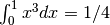
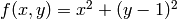

Basics of Scipy¶
SciPy is probably the scientifically most potent package. If Python can do anything for you at all, changes are best that it is Scipy doing the job.
Scipy is not developed by astronomers, but primarily by mathematicians and IT experts. Hence, its code quality is - on average - much better than some IDL code written by an astronomer who was under time pressure due to an upcoming proposal deadline. By better code quality, we mean not only that the code is usually faster, it has also been properly tested and debugged.
The most recent version of Scipy is 0.10. As this version number suggests, substantial software design is still going on within Scipy. In fact, the Scipy software developers explicitly warn that the organisation of the Scipy package may still change before the first 1.x release. For us, this means that the code we provide here may not run anymore, using a future Scipy version.
Let us consider three simple examples. But note that these three examples by no means exploit the wealth of functionality of Scipy! This you can only appreciate, if you start using it for your own work.
Numerical integration¶
Numerical integration is faced quite often in science. It is most prominent in the case of error estimation, when we need to marginalise over nuisance parameters.
Let us consider a very simple example, integrating :
from scipy.integrate import quad
# Step 1: Define integrand.
def integrand(x, a, b):
return a + b*x*x*x
# Step 2: Integrate.
# The integrand gets further arguments a=0 and b=1.
[result, error] = quad(integrand, 0.0, 1.0, args=(0.0,1.0))
print str(result)+" +/- "+str(error)
Take a look here to find out about further arguments, e.g., a tolerance limit for the numerical accuracy or maximum number of iterations.
For an overview of other integration routines of Scipy, see the Scipy.integrate documentation.
Optimisation¶
Numerical optimisation is another task frequently encountered in scientific work, e.g., minimising  for nonlinear models.
for nonlinear models.
Let us consider a very simple example, where we want to minimise the function , which has a single minimum at x=0:
from scipy.optimize import fmin
# Step 1: Define function to be minimised.
def f4minimiser(x):
return x[0]*x[0] + (x[1] - 1.0)*(x[1] - 1.0)
x0 = [1.0, -1.0]
xopt = fmin(f4minimiser, x0, xtol=1e-8)
print xopt
Like above, the function to be minised can take additional arguments that are not part of the minimisation process.
The optimization subpackage of Scipy also has other minimisation algorithms that may be more stable than this one in your specific application. For more information, see the Scipy.optimization documentation.